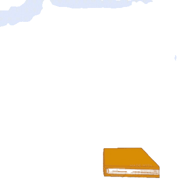
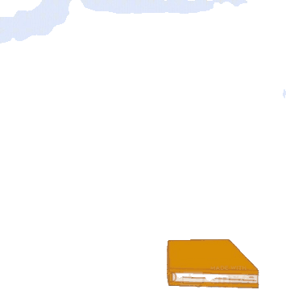
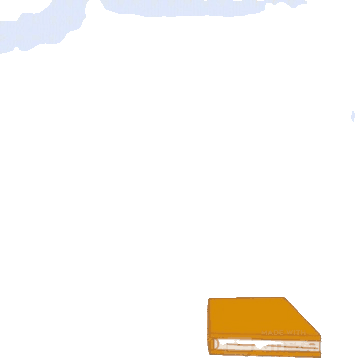
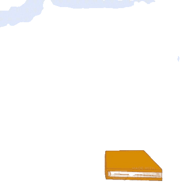

I'm Doug
Aspiring Digital Product Manager
 



I'm on a journey to create the best experiences combining digital and physical reality.

I discovered a passion for leadership at my 12th birthday party. My friends and I decided we wanted a sandcastle that could survive the ocean. We built a sprawling complex of blocky pyramids ornamented with numerous drip structures. For over 8 hours we battled in the sun, sand and surf to divert the tide into a system of canals and even designated human shields to block the incoming waves. The next day all that remained was a single lump of sand. I love leading others, tackling difficult problems, and building things that last.

In a world swamped in information stories unlock meaning. Stories grounded in truth act as guides to deeper, richer and better experiences. I'm good at synthesizing vast volumes of information into meaningful and persuasive narratives that achieve shared tasks.
Soldier and signal specialist providing software and hardware technical support, operation and maintainence of radio communication systems & building networks from scratch.
Led data efforts for internal CRM & designed excel dashboards to highlight weekly reporting metrics. Supported executive digital recruiting efforts for Fortune 500 clients in tech, retail & entertainment industries.
I love to connect over big ideas. Feel free to reach out if you think we can help one another. Some of my current passions include designing an all in one shopping app & creating the digital solution to local politics.